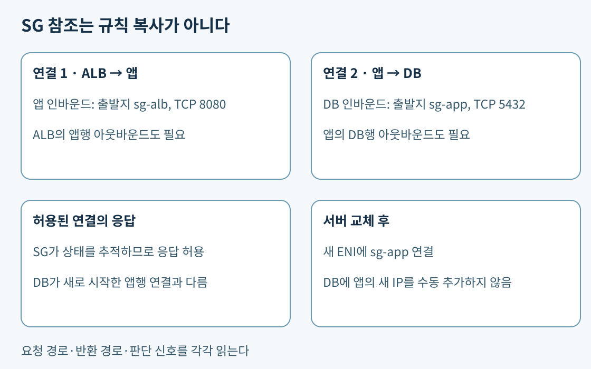
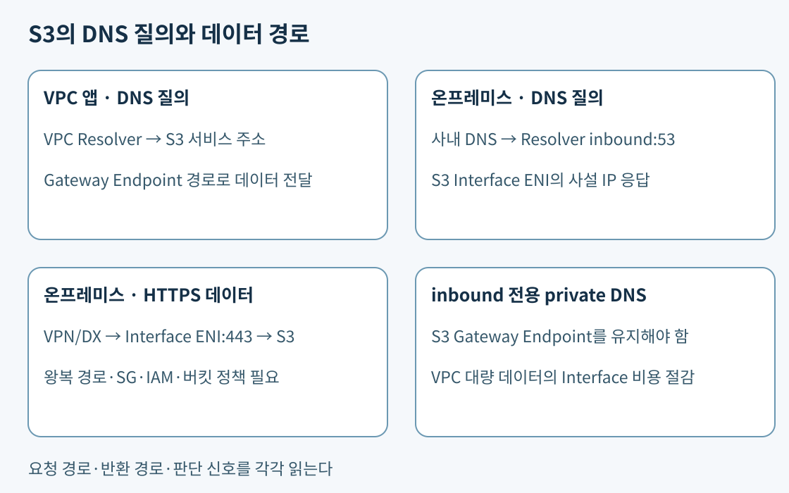

5일 차 본문 · 4일 차 패킷 · 6일 차 로드 밸런서
핵심 구성 예. 인터넷 공개 ALB가 HTTPS 443을 받고 앱의 TCP 8080으로 요청을 전달하며 앱이 DB의 TCP 5432에 연결한다고 하자. ALB·앱·DB에 각각 sg-alb, sg-app, sg-db를 연결한다. sg-alb는 사용자 443 인바운드와 앱 8080 아웃바운드를, sg-app은 출발지 sg-alb의 8080 인바운드와 목적지 sg-db의 5432 아웃바운드를 허용한다. DB는 출발지 sg-app의 5432만 받는다. 인바운드는 들어오는 새 연결의 출발지, 아웃바운드는 나가는 새 연결의 목적지에 맞춰 쓴다.
참조란 “그 SG가 연결된 인터페이스의 사설 주소”를 트래픽 식별에 이용하는 것이다. sg-app의 규칙을 DB에 복사하거나 앱이 DB의 권한을 상속하는 뜻이 아니다. 앱이 교체되어도 새 ENI에 같은 SG를 연결하면 DB 규칙의 IP 목록을 고치지 않아도 된다. 반대로 운영자 노트북이 VPC 주소라는 이유만으로 앱 SG의 구성원이 되지는 않는다. SG 참조와 적용 범위.

Stateful은 허용한 연결의 상태를 추적한다는 뜻이다. 앱의 DB 연결이 허용되면 그 응답을 위해 앱에 DB발 임시 포트 인바운드를 따로 열 필요가 없다. 그러나 DB가 앱을 향해 시작한 새 연결은 그 응답이 아니므로 자동 허용되지 않는다. 동일 ENI의 여러 SG는 허용을 합치므로 “제한 SG를 하나 더 붙이면 넓은 기존 SG가 좁아진다”는 가정도 틀리다. SG 연결 추적, SG 기본 규칙.
SG는 HTTP 본문의 SQL 인젝션 문자열을 해석하는 계층이 아니다. SQL 인젝션은 입력을 SQL 명령처럼 실행하게 만드는 공격이다. 443을 허용한 뒤 그 안의 악성 웹 요청을 구분하려면 11일 차 WAF를 연결한다. WAF는 웹 요청 조건을 평가하는 방화벽이며 SG의 포트 제한과 서로 다른 역할이다.
핵심. NACL은 서브넷 경계에 적용하는 stateless 규칙이다. stateless는 이전 요청이 허용됐다는 사실만으로 반환 패킷을 허용하지 않는다는 뜻이다. 규칙은 각 방향에서 작은 번호부터 검사해 첫 일치를 적용한다. 동일 서브넷 내부의 서버별 격리는 SG로 다룬다.
구성 예 A는 웹 서버가 요청을 받는 경우다. 클라이언트 198.51.100.25:54000 → 웹:443을 받으려면 웹 서브넷 인바운드의 목적지 443이 필요하다. 응답은 웹:443 → 클라이언트:54000이므로 웹 서브넷 아웃바운드의 목적지 54000을 허용해야 한다. 아웃바운드 443만 허용하면 응답을 막는다.
구성 예 B는 앱이 요청을 시작하는 경우다. 앱:52000 → 외부 API:443에는 앱 서브넷 아웃바운드 목적지 443, API:443 → 앱:52000에는 인바운드 목적지 52000이 필요하다. 앱이 웹 요청에 응답하는 경우와 필요한 방향이 반대다. 실제 임시 포트 범위는 클라이언트 OS와 중간 NAT·로드 밸런서에 따라 다르므로 예시의 한 포트만 일반 운영 규칙으로 옮기지 않는다. NAT의 변환 전후 각 구간도 별개로 추적한다. 사용자 정의 NACL의 반환 트래픽·임시 포트.
| 웹 서브넷 규칙 | 조건 예 | 의미 |
|---|---|---|
| 인바운드 90 Allow | 출발지 10.30.5.0/24, TCP 목적지 443 |
승인한 좁은 예외 |
| 인바운드 100 Deny | 출발지 10.30.0.0/16, 전체 |
나머지 상위 범위 차단 |
| 인바운드 200 Allow | 출발지 전체, TCP 목적지 443 | 그 밖의 HTTPS 허용 |
| 아웃바운드 Allow | 응답 클라이언트 범위, 목적지 임시 포트 | 반환 통신 허용 |
90번이 없으면 10.30.5.10도 100번에 막힌다. 예외를 110번에 두면 앞의 거부에 이미 걸리므로 소용없다. 라우팅의 /24 우선 규칙을 NACL에 적용하면 안 된다. NACL은 넓은 /16 거부가 먼저면 그걸 적용한다. 기본 * Deny도 마지막까지 일치가 없을 때 적용된다. NACL 평가 순서와 연결.
핵심. 서브넷의 IGW행 경로는 공개 경로 유무, 퍼블릭 주소는 인터넷 IPv4에서 식별할 주소, SG는 들어올 수 있는 연결을 정한다. 공개 서브넷에서 퍼블릭 IPv4를 가진 EC2도 SG가 막으면 연결되지 않는다. 비공개 앱의 SG에 인터넷 전체를 허용해도 IGW 직결 경로·퍼블릭 주소가 저절로 생기지 않는다. 대신 같은 VPC의 침해된 서버가 접근할 위험은 늘어난다. 내부 통신도 앱 계층 SG만 허용하는 식으로 제한한다. IGW 통신 요건.
SSH는 원격 셸 접속 프로토콜이다. SSH 키를 배포하지 않고 인바운드를 열지 않는 관리에는 Systems Manager Session Manager를 검토할 수 있다. 인스턴스의 에이전트·역할·서비스 연결과 중앙 로그 설정이 별도로 필요하다. 비공개 서브넷에 있다는 사실만으로 Session Manager가 자동 작동하지 않는다. 12일 차 운영 관리에서 관리 권한과 로깅을 다룬다. Session Manager 연결 요건.
핵심 구성 예. 같은 리전 S3로 대량 백업을 보내면서 외부 라이선스 서버에도 접속하는 앱을 생각하자. S3 Gateway Endpoint를 앱 라우팅 테이블에 연결하면 AWS 관리 prefix list(해당 서비스 IP 범위의 목록) 목적지가 endpoint로 향한다. 0.0.0.0/0 → NAT는 남겨도 더 구체적인 S3 경로가 우선한다. S3 트래픽은 NAT 처리에서 빠지고 외부 라이선스 요청만 NAT를 쓴다. 엔드포인트 추가 요금이 없는 이 방식은 같은 VPC의 S3·DynamoDB 접근에서 우선 검토하기 좋다. 버킷의 공개 설정이나 객체 읽기 권한을 변경해서 이 경로를 만드는 것은 아니다. Gateway Endpoint 경로·비용.
Gateway Endpoint에는 Interface Endpoint처럼 사설 ENI·SG를 연결하지 않는다. 앱 SG의 아웃바운드와 NACL은 여전히 맞아야 한다. 서비스 주소가 공개 IP로 DNS 해석돼도 Gateway 경로를 타면 IGW·NAT가 필요하지 않다. 따라서 “DNS 응답이 공개 주소이므로 인터넷을 경유한다”는 결론은 라우팅을 보지 않고 내릴 수 없다. 온프레미스나 피어링 VPC가 이 endpoint를 전이 출구로 공유할 수는 없다. S3 Gateway Endpoint 보안과 제한.
핵심 구성 예. 비공개 작업자가 Secrets Manager를 인터넷 없이 호출해야 한다면 그 서비스의 Interface Endpoint를 선택한 AZ의 서브넷에 만든다. endpoint ENI는 사설 주소를 소비한다. 앱이 이 주소로 HTTPS를 보내고 endpoint SG가 앱 SG에서 오는 443을 허용해야 한다. 앱 아웃바운드·왕복 경로·NACL도 맞아야 한다. IAM의 비밀값 읽기 권한은 별도다. endpoint 생성만으로 서비스 권한이 생기지 않는다. Interface Endpoint 생성과 ENI·SG.
DNS는 서비스 이름을 IP로 바꾸는 기능이다. Private DNS를 켜면 지원 서비스의 기존 이름을 endpoint 사설 IP로 해석할 수 있다. VPC의 DNS 지원·호스트 이름 속성이 필요하다. 앱이 기존 이름을 계속 쓰려는데 공개 IP가 조회된다면 먼저 실제 DNS 조회 위치와 private DNS 설정을 확인한다. 엔드포인트가 있어도 이름이 기존 공개 주소를 가리키고 인터넷 경로가 없다면 시간 초과가 날 수 있다. endpoint SG의 빈 인바운드도 별도의 차단 원인이다. 한 설정을 고친 뒤 다른 조건이 자동으로 고쳐졌다고 보지 않는다. AWS 서비스 endpoint의 Private DNS.
보충 설정. 온프레미스에서 VPN·Direct Connect로 endpoint ENI의 사설 주소까지 접근하려면 해당 주소의 왕복 경로, endpoint SG, 서비스 권한이 필요하다. Gateway Endpoint를 온프레미스에 전파해서 쓰는 것은 지원되지 않으므로 S3 Interface Endpoint를 검토한다. 기존 S3 이름을 유지하려면 온프레미스 DNS가 VPC의 Route 53 Resolver inbound endpoint로 해당 질의를 전달하게 한다. inbound는 사내에서 VPC로 DNS 질의가 들어오는 방향이다. Resolver endpoint는 DNS 질의를 받고, S3 endpoint ENI는 실제 HTTPS 데이터를 받는다. 둘의 포트·주소·역할을 섞지 않는다.

S3의 private DNS only for inbound Resolver endpoint를 사용하면 사내에서 inbound Resolver를 거친 이름 질의에는 Interface Endpoint 주소를 주고, VPC 내부 질의는 Gateway 경로를 쓸 수 있게 구분한다. 이 모드는 VPC에 S3 Gateway Endpoint를 유지해야 하며 관련 DNS 레코드 유형도 호환되어야 한다. 모든 S3 질의를 Interface로 보내는 경우보다 VPC의 대량 전송 처리 요금을 줄일 수 있다. Interface의 AZ별 시간·처리량과 Resolver 비용은 남는다. 이 기능을 모든 AWS API endpoint에 일반화하지 않는다. S3 PrivateLink의 하이브리드 DNS 조건, Resolver inbound endpoint, PrivateLink 요금.
예를 들어 VPC에서 주로 대용량 파일을 읽고 사내에서는 소량 관리 파일을 읽는다면 VPC까지 유료 Interface로 일괄 전환하는 비용을 피할 여지가 크다. 반면 사내 DNS가 여전히 공개 주소를 돌려주면 사설 데이터 경로가 준비돼 있어도 요구를 만족하지 않는다. 사내의 조건부 전달(특정 도메인 질의를 지정 DNS 서버로 보내기), Resolver endpoint의 UDP/TCP 53 허용, 조회 응답, 실제 HTTPS의 목적지를 차례로 검증한다. Resolver inbound 구성 절차.
핵심. 소비자가 제공자의 특정 TCP 서비스만 필요하고 VPC 전체의 양방향 통신은 불필요하다면 PrivateLink endpoint service를 비교한다. 제공자는 NLB 뒤에 자신의 서비스를 등록해 운영하고 소비자는 자신의 VPC에 Interface Endpoint를 만든다. 소비자는 자기 ENI의 사설 주소로 연결하므로 VPC의 CIDR가 겹치는 경우에도 전체 네트워크를 피어링하는 설계와 다르게 접근할 수 있다. 연결 승인과 앱 인증, 지원 프로토콜·리전 조건은 별도로 확인한다. 제공자가 장애 대응 책임을 소비자에게 넘기는 기능은 아니다. PrivateLink endpoint service 구조.
두 VPC 전체의 사설 통신이 필요하고 CIDR가 겹치지 않으면 피어링을 비교할 수 있다. 두 개만 연결하는 단순한 망에 TGW를 무조건 추가하면 연결·처리 비용과 관리 요소가 늘 수 있다. 다수 VPC·지사·전이 허브가 필요하면 TGW를 검토한다. A-B, B-C 피어링은 A-C 전이를 제공하지 않는다. 네트워크 연결 수와 필요한 통신 범위가 선택 기준이다. 피어링 제한, Transit Gateway 개요. DX·VPN의 암호화 계층과 private IP VPN은 13일 차에서 이어진다.
핵심. endpoint 정책은 이 경로로 통과시킬 주체·API·리소스를 제한한다. 역할의 API 권한을 새로 부여하는 대체 IAM 정책이 아니다. 앱 역할이 버킷 A 읽기를 허용하지만 endpoint 정책은 버킷 B만 허용한다면 A 요청은 경로의 제한에 막힌다. 역할에 광범위한 권한을 더하는 대신 endpoint 정책에 필요한 주체·A 객체·작업만 허용하도록 고친다. 버킷·조직 정책 등 다른 거부도 함께 확인한다. Endpoint 정책과 IAM 관계.
버킷 정책에 aws:SourceVpce가 지정 endpoint와 다를 때 Deny하는 조건을 두면 인터넷에서 보낸 요청은 역할의 Allow만으로 우회할 수 없다. 명시적 거부는 같은 계정의 IAM 허용보다 우선한다. Allow는 허용 후보이고 Deny는 그 후보도 막는 제한이다. endpoint를 만들기만 하고 실제 요청이 NAT·인터넷으로 나가면 경로 조건을 만족하지 않는다. 정책 조건이 없어야 접근 가능한 콘솔·관리 작업도 함께 막힐 수 있으므로 운영 접근 경로를 설계해야 한다. 특정 endpoint로 S3 제한, IAM 정책 평가.
위 구성 예는 네트워크 통과와 API 허용을 별도로 추적하는 연습이다. 특정 주소·포트·DNS 옵션의 조합을 실제 시험 출제 빈도로 해석하지 않는다. 핵심은 연결을 누가 시작했는지, 응답의 목적지 포트가 무엇인지, 실제 서비스 경로와 정책 조건이 일치하는지를 설명하는 것이다.
공식 자료 확인일: 2026-11-02